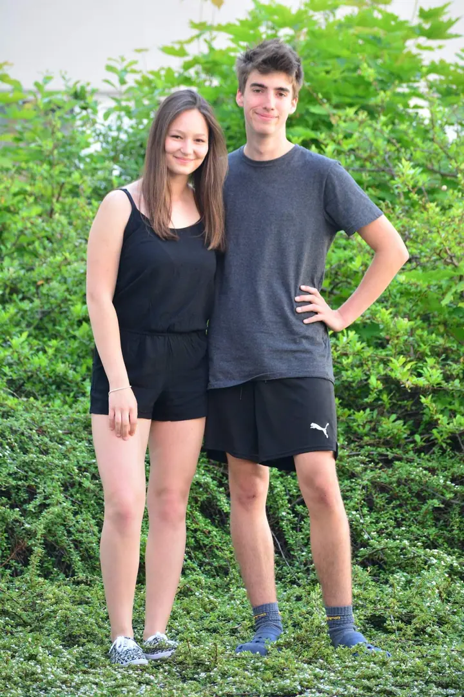
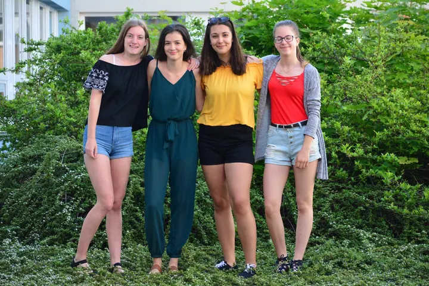
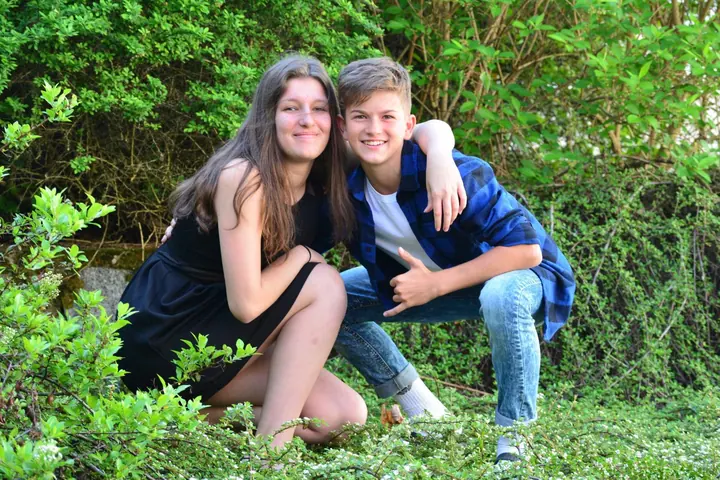

01 / 02
Skupinové a třídní focení
Fotím celé party, třídy i s učiteli. Na památku konce školy nebo jen tak, aby vám zůstala společná fotka.
Zeptat se na termín→


Portréty pro dvojice i celé party
Zeptat se na termín →(01) Ahoj
Jmenuji se Monika Strnádková a fotím lidi venku v zeleni, ve dvojicích i v celých partách . Ráda si u focení užiju i trochu legrace , ať jsou fotky opravdu vaše.
(02) Co fotím
01 / 02
Fotím celé party, třídy i s učiteli. Na památku konce školy nebo jen tak, aby vám zůstala společná fotka.
Zeptat se na termín→02 / 02
Focení ve dvou, ve třech nebo v malé skupince venku v zeleni. Uvolněně a klidně i s trochou legrace.
Zeptat se na termín→(04) Postup
Od první zprávy po hotovou galerii.
Krok 1 z 4
Ozvěte se e-mailem, na Instagramu nebo Facebooku a napište, jaké focení si představujete.
Krok 2 z 4
Společně vybereme místo, termín a domluvíme cenu podle toho, co budete chtít.
Krok 3 z 4
Sejdeme se venku a fotíme v klidu. Skupinové fotky, dvojice i hravé záběry.
Krok 4 z 4
Fotky vyberu, upravím a pošlu vám je domluvenou cestou.
Stačí přijít a být sami sebou.
(05) Za objektivem
Jmenuji se Monika Strnádková a nejčastěji fotím kamarády, spolužáky a celé třídy. Ať přijdete ve dvou, nebo s celou partou i s učiteli, najdeme místo, kde se všichni vejdete na fotku.
Fotím na Nikon D5200 a podle situace střídám tři objektivy, od širšího záběru pro velké skupiny až po delší ohnisko na portréty.
Cena focení není pevně daná. Záleží na tom, co si přejete, takže stačí napsat a domluvíme se.
Monika
Monika Strnádková · Fotografka portrétů a skupinových fotek
Ceny focení jsou různé, záleží na rozsahu. Napište mi a cenu domluvíme.
Ano, fotím i velké skupiny včetně učitelů. Stačí se domluvit na místě a čase.
Ráda fotím venku v zeleni. Konkrétní místo vybereme spolu podle toho, kde vám to bude vyhovovat.
Napište mi e-mail na monousekstr@seznam.cz nebo zprávu na Instagram či Facebook.
(07) Kontakt
Napište pár vět o tom, co si představujete, a termín, který se vám hodí.
monousekstr@seznam.cz